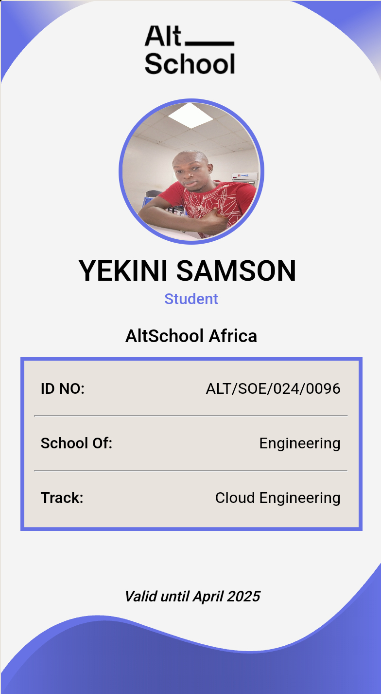

Introduction
Hi, my name is Yekini Samson. I was born and raised in Lagos, Nigeria. I graduated from the University of Lagos with a degree in Medical Laboratory Science. I currently work as a Medical Scientist at Vcare Diagnostics. I am passionate about Software Engineering. This page provides information about my background, career, and interests. I hope you enjoy learning more about me!
Biography
I was born in Lagos, Nigeria. Growing up, I developed a keen interest in Software Engineering. My family played a significant role in nurturing my curiosity and passion for this field. I will probably form a corroboration between tech and health, but for now i have subscribed for the Cloud Engineering track. i know i got the balls and with testicular fortitude i am vibing along.
Career
My professional journey began with a fascination for computers from a young age. Although I have not worked in roles directly related to software engineering, I have gathered valuable experience and momentum for my current career path.
Why I Joined ALT SCHOOL
I joined Alt School because i dont want to ride on solo I see it as a platform that will aid my ambitions and motivate me to work harder to become one of the best. Outside of work, I enjoy listening to music and engaging in activities that inspire creativity and drive.